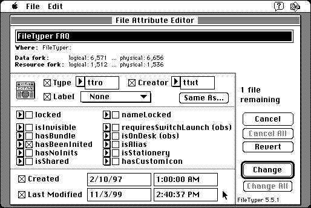

Download
filetyper-551.zip (692K) FileTyper 5.5.1 repackaged into a zipped hfs disk image and checksum file. The disk image can be mounted with Mini vMac.
filetyper-551.sit (655K) FileTyper 5.5.1 in the original format.
copyright: Daniel Azuma
mod date: Jul 31, 2000
license: shareware
from url :
FileTyper download page
“For quickly changing types, creators, attribute flags and date stamps.” Requires System 7.

If you find these downloads useful, please consider helping the Gryphel Project, which hosts them.
Here are the md5 checksums for the downloads, signed with Gryphel Key 5:
--------- GRY SIGNED TEXT --------- 8f5d00cc304229288a83d5c1cabca0d2 filetyper-551.zip 2ab0361695479133ad27d0534e5116d9 filetyper-551.sit ------- BEGIN GRY SIGNATURE ------- Gry/4Xa8CFcUzxdN/C3XjEEHiS0QEb8OrycNv0yysl59D/6yPNY5cQZJUD2I0McS DFt02OOsdiU1bd+N+yYWwjL8BWQ7840e3QdoVlowavk0MCWSDl3Zyp6ef17gp3jI AxjCGQM7LXvlijEsT1ienmRdSI56QZjH31iQtQViwRNAQIL3BTbV3DNXBwN8kBHy -------- END GRY SIGNATURE --------